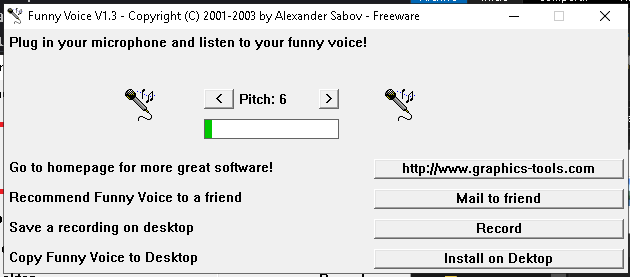

1) descargar y descomprimir el archivo "voz.rar"
2) ejecutar el aplicativo "voz.exe" portable
3) "Microphone Source" elija su microfono y el "Sound Output" sus audifonos
4) click en "Start"
la voz esta modificada en tiempo real mi recomendacion es no cerrar la ventana
almenos que ya no quiera cambiar su voz

Procederemos a la configuracion personalizada
5.1) Clic derecho en el icono de audio que esta en la derecha del la "barra de
tareas" de windows
5.2) Clic en "Abrir Configuracion de sonido"
5.3) Clic en "Panel de control de sonido"
5.4) Clic "Grabar"
Supongo que estedes lo tendran asi por defecto
6) Clic derecho en el dispositivo "Mezcla estereo" (su funcion es transmitir el
audio que se reproduce en el sistema), es un micro interno del sistema
asegurese de que el "Mezcla estereo" salga como dispositivo prederterminado
7) Entramos al Discord.
8) Click en la tuerca de configuracion, Voz y video.
En el dispositivo de entrada lo puse como el microfono USB por que no nesisito
cambiar la voz en esa red por otro lado si quieres cambiar de voz solo elijes el
dispositivo "Mezcla estereo".